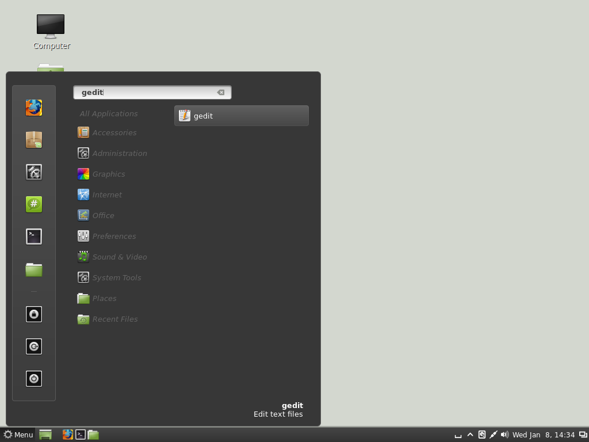
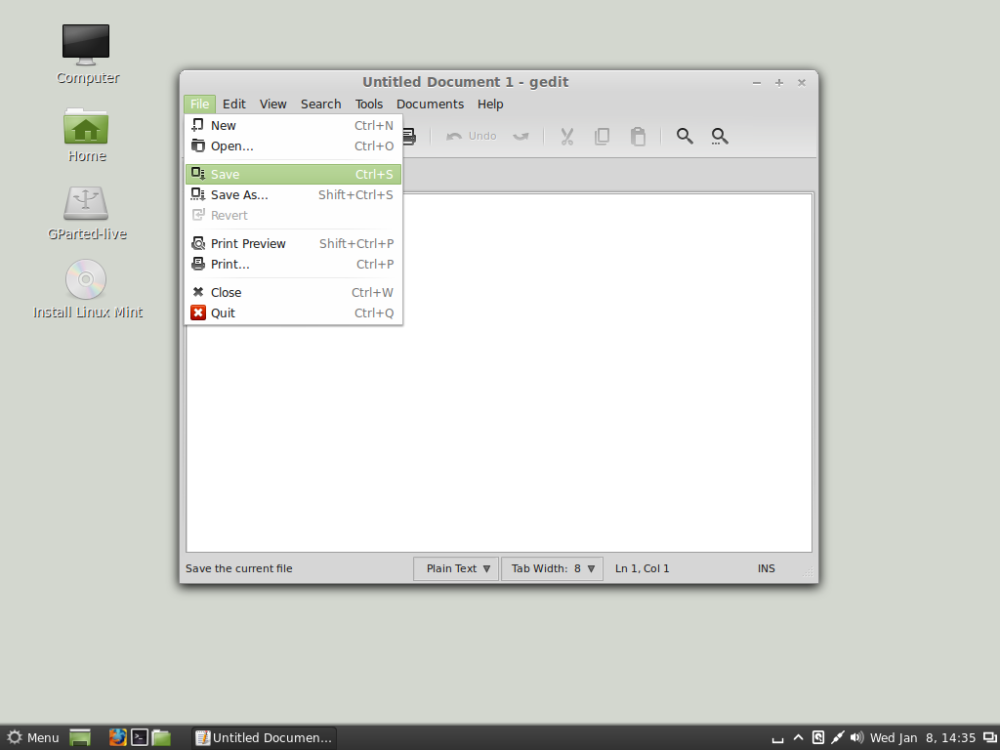
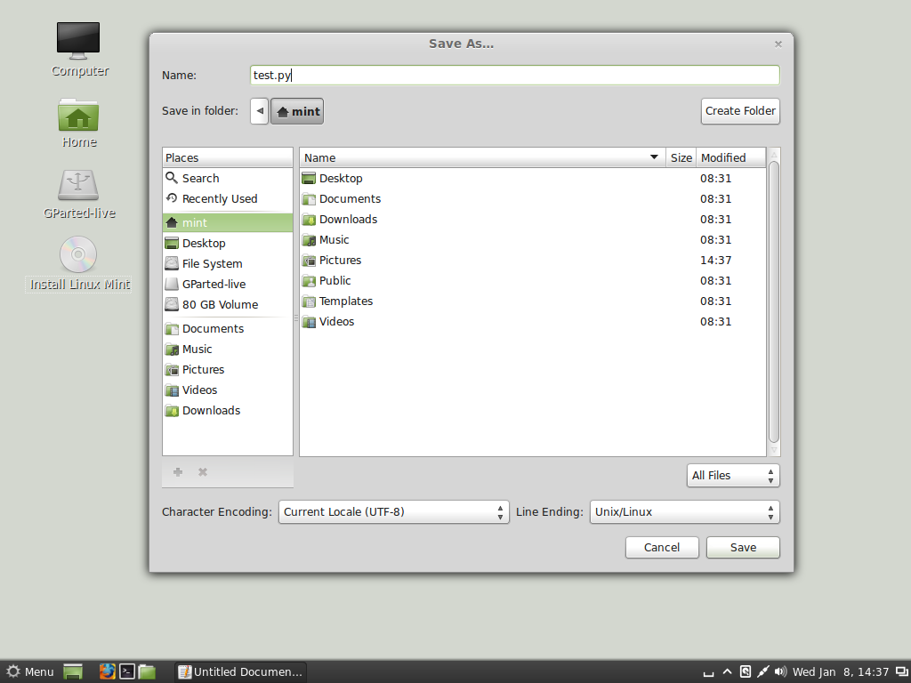
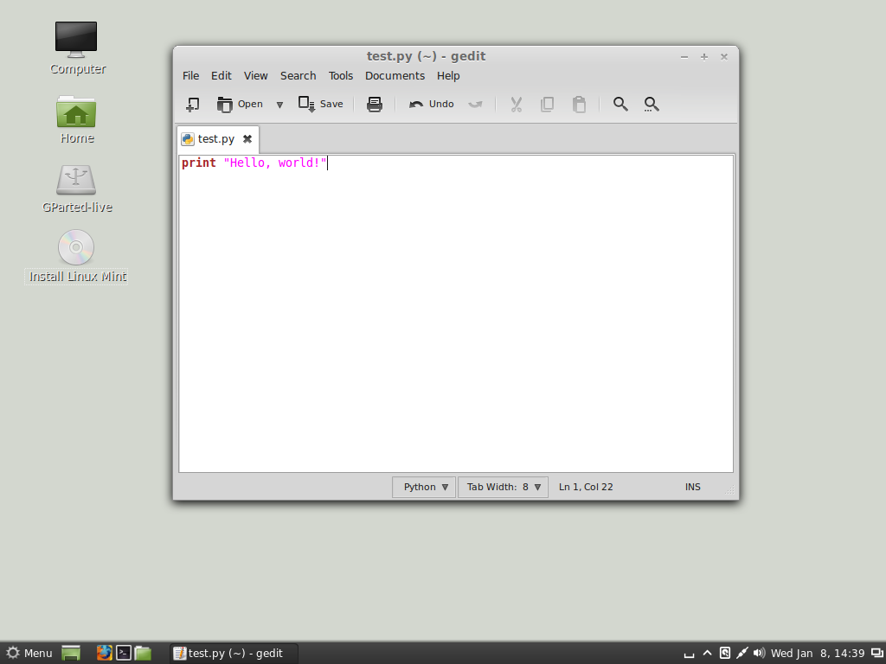
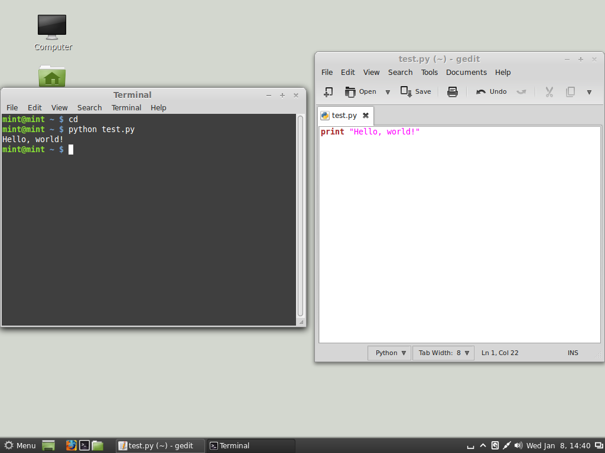

Procedures
In this lesson, we'll learn a little bit about ~procedures~ (sometimes called ~functions~ or ~methods~). There are subtle differences among procedures and functions and methods, but for now, we'll just lump them all together. Generally speaking, procedure is a group of instructions that can accept ~inputs~ (sometimes called ~arguments~) and generate outputs, and that can be accessed by a single name (rather than retyping the whole group of instructions every time you want to use them). Although procedures _can_ accept inputs and generate outputs, they don't have to.
In Python, a procedure is defined by starting with the keyword `def` followed by the procedure name, a set of parentheses where the inputs are listed, and a colon. To make a procedure generate an output, use the `return` keyword followed by the thing you want the procedure to return. Just like `while` loops, `for` loops, and `if` statements, the blocks of code inside a procedure must be indented. Here's an example.
|
>>> def hi():
... print "Hi."
...
|
In the code above, I've defined a procedure called `hi` that takes no inputs and generates no outputs. Something interesting to notice is that, so far, Python hasn't actually _used_ our procedure; it only _knows_ about it. To get Python to make use of our procedure, we must ~call~ the procedure by typing its name followed by parentheses.
|
>>> hi()
'Hi.' # this is the result of the function, obviously
|
Here's an example of a function that takes an input and returns an output. It takes only one thing as an input, then it multiplies that input by four and returns the result to us. More specifically, anything that we enter as an input to the function will be stored into the variable `n`, which Python will then use throughout the remainder of the function.
|
>>> def quadruple(n):
... return n * 4
...
|
Let's see it in action.
|
>>> quadruple(5)
20
>>> quadruple("yes")
'yesyesyesyes'
>>> quadruple([1,2,3])
[1, 2, 3, 1, 2, 3, 1, 2, 3, 1, 2, 3]
>>> quadruple()
Traceback (most recent call last):
File "", line 1, in
TypeError: quadruple() takes exactly 1 argument (0 given)
|
I hope you weren't surprised to see that our function can multiply strings and arrays by four just as easily as it can multiply numbers by four. I hope you also noticed that I didn't pass an input into that last call, and Python complained because it expected an input and didn't get one.
We can also design procedures that accept multiple inputs and/or return multiple outputs.
|
>>> def sum(a,b):
... return a, b, a + b
...
>>> sum(3,4)
(3, 4, 7)
|
Text Files
Another really useful feature that will increase our Python-fu is the ability to write Python code into text files. Using the Python shell is really handy for immediately testing whether a particular command works, but it's not the way we'd want to build larger programs. I mean, imagine if you typed up a long procedure in the Python shell, only to find out later that it didn't work the way you expected! You'd have to retype the whole thing, which would quickly become an annoying process. It's much, much easier to type up text files and ask Python to run the file itself.
In Linux Mint, we'll use a text editor called Gedit. Look for "gedit" or "Text Editor" on the main menu. Once Gedit is open, simply choose "File" >> "Save" from the menus to save the file. You'll want to give the file a `.py` extension, so name it something like `test.py`. My recommendation is to save the file in your profile folder for now.



Next, we'll fill the text file with some Python commands.

Then, we'll save the file and open a Terminal. By default, the Terminal _should_ start us out in our home folders, but just to be sure, type `cd` and hit ENTER. That'll take you to your home folder if you're not already there.
Now, in the past, we entered the Python shell by typing `python` in the Terminal. Now, instead of entering the Python shell, we're going to type `python test.py`, which will ask Python to run the file (instead of putting us in the Python shell).

Hopefully, you can begin to see the power of using text files. If something is wrong with our code, we only have to change the part that's wrong, not the entire thing (like we'd have to do if we did all our programming from inside the Python shell). Just remember that all Python files must end with the `.py` extension, and that you can run them from the Terminal by typing `python filename.py`.
For extra practice, try writing a function that returns the results of the quadratic formula given three coefficient inputs. You could also try transferring your random number guessing game to a Python file.